Chapter 8: Chapter V¶
8.1 On the Strange Refraction of Iceland Crystal¶
1.
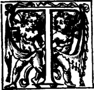
here is brought from Iceland, which is an Island in the North Sea, in the latitude of 66 degrees, a kind of Crystal or transparent stone, very remarkable for its figure and other qualities, but above all for its strange refractions. The causes of this have seemed to me to be worthy of being carefully investigated, the more so because amongst transparent bodies this one alone does not follow the ordinary rules with respect to rays of light. I have even been under some necessity to make this research, because the refractions of this Crystal seemed to overturn our preceding explanation of regular refraction; which explanation, on the contrary, they strongly confirm, as will be seen after they have been brought under the same principle. In Iceland are found great lumps of this Crystal, some of which I have seen of 4 or 5 pounds. But it occurs also in other countries, for I have had some of the same sort which had been found in France near the town of Troyes in Champagne, and some others which came from the Island of Corsica, though both were less clear and only in little bits, scarcely capable of letting any effect of refraction be observed.
2. The first knowledge which the public has had about it is due to Mr. Erasmus Bartholinus, who has given a description of Iceland Crystal and of its chief phenomena. But here I shall not desist from giving my own, both for the instruction of those who may not have seen his book, and because as respects some of these phenomena there is a slight difference between his observations and those which I have made: for I have applied myself with great exactitude to examine these properties of refraction, in order to be quite sure before undertaking to explain the causes of them.
3. As regards the hardness of this stone, and the property which it has of being easily split, it must be considered rather as a species of Talc than of Crystal. For an iron spike effects an entrance into it as easily as into any other Talc or Alabaster, to which it is equal in gravity.
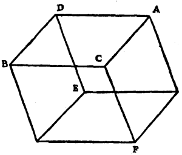
4. The pieces of it which are found have the figure of an oblique parallelepiped; each of the six faces being a parallelogram; and it admits of being split in three directions parallel to two of these opposed faces. Even in such wise, if you will, that all the six faces are equal and similar rhombuses. The figure here added represents a piece of this Crystal. The obtuse angles of all the parallelograms, as C, D, here, are angles of 101 degrees 52 minutes, and consequently the acute angles, such as A and B, are of 78 degrees 8 minutes.
5. Of the solid angles there are two opposite to one another, such as C and E, which are each composed of three equal obtuse plane angles. The other six are composed of two acute angles and one obtuse. All that I have just said has been likewise remarked by Mr. Bartholinus in the aforesaid treatise; if we differ it is only slightly about the values of the angles. He recounts moreover some other properties of this Crystal; to wit, that when rubbed against cloth it attracts straws and other light things as do amber, diamond, glass, and Spanish wax. Let a piece be covered with water for a day or more, the surface loses its natural polish. When aquafortis is poured on it it produces ebullition, especially, as I have found, if the Crystal has been pulverized. I have also found by experiment that it may be heated to redness in the fire without being in anywise altered or rendered less transparent; but a very violent fire calcines it nevertheless. Its transparency is scarcely less than that of water or of Rock Crystal, and devoid of colour. But rays of light pass through it in another fashion and produce those marvellous refractions the causes of which I am now going to try to explain; reserving for the end of this Treatise the statement of my conjectures touching the formation and extraordinary configuration of this Crystal.
6. In all other transparent bodies that we know there is but one sole and simple refraction; but in this substance there are two different ones. The effect is that objects seen through it, especially such as are placed right against it, appear double; and that a ray of sunlight, falling on one of its surfaces, parts itself into two rays and traverses the Crystal thus.
7. It is again a general law in all other transparent bodies that the ray which falls perpendicularly on their surface passes straight on without suffering refraction, and that an oblique ray is always refracted. But in this Crystal the perpendicular ray suffers refraction, and there are oblique rays which pass through it quite straight.
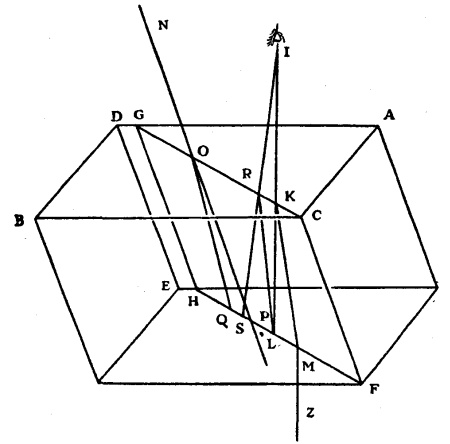
8. But in order to explain these phenomena more particularly, let there be, in the first place, a piece ABFE of the same Crystal, and let the obtuse angle ACB, one of the three which constitute the equilateral solid angle C, be divided into two equal parts by the straight line CG, and let it be conceived that the Crystal is intersected by a plane which passes through this line and through the side CF, which plane will necessarily be perpendicular to the surface AB; and its section in the Crystal will form a parallelogram GCFH. We will call this section the principal section of the Crystal.
9. Now if one covers the surface AB, leaving there only a small aperture at the point K, situated in the straight line CG, and if one exposes it to the sun, so that his rays face it perpendicularly above, then the ray IK will divide itself at the point K into two, one of which will continue to go on straight by KL, and the other will separate itself along the straight line KM, which is in the plane GCFH, and which makes with KL an angle of about 6 degrees 40 minutes, tending from the side of the solid angle C; and on emerging from the other side of the Crystal it will turn again parallel to JK, along MZ. And as, in this extraordinary refraction, the point M is seen by the refracted ray MKI, which I consider as going to the eye at I, it necessarily follows that the point L, by virtue of the same refraction, will be seen by the refracted ray LRI, so that LR will be parallel to MK if the distance from the eye KI is supposed very great. The point L appears then as being in the straight line IRS; but the same point appears also, by ordinary refraction, to be in the straight line IK, hence it is necessarily judged to be double. And similarly if L be a small hole in a sheet of paper or other substance which is laid against the Crystal, it will appear when turned towards daylight as if there were two holes, which will seem the wider apart from one another the greater the thickness of the Crystal.
10. Again, if one turns the Crystal in such wise that an incident ray NO, of sunlight, which I suppose to be in the plane continued from GCFH, makes with GC an angle of 73 degrees and 20 minutes, and is consequently nearly parallel to the edge CF, which makes with FH an angle of 70 degrees 57 minutes, according to the calculation which I shall put at the end, it will divide itself at the point O into two rays, one of which will continue along OP in a straight line with NO, and will similarly pass out of the other side of the crystal without any refraction; but the other will be refracted and will go along OQ. And it must be noted that it is special to the plane through GCF and to those which are parallel to it, that all incident rays which are in one of these planes continue to be in it after they have entered the Crystal and have become double; for it is quite otherwise for rays in all other planes which intersect the Crystal, as we shall see afterwards.
11. I recognized at first by these experiments and by some others that of the two refractions which the ray suffers in this Crystal, there is one which follows the ordinary rules; and it is this to which the rays KL and OQ belong. This is why I have distinguished this ordinary refraction from the other; and having measured it by exact observation, I found that its proportion, considered as to the Sines of the angles which the incident and refracted rays make with the perpendicular, was very precisely that of 5 to 3, as was found also by Mr. Bartholinus, and consequently much greater than that of Rock Crystal, or of glass, which is nearly 3 to 2.
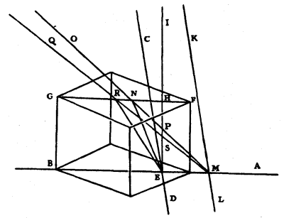
12. The mode of making these observations exactly is as follows. Upon a leaf of paper fixed on a thoroughly flat table there is traced a black line AB, and two others, CED and KML, which cut it at right angles and are more or less distant from one another according as it is desired to examine a ray that is more or less oblique. Then place the Crystal upon the intersection E so that the line AB concurs with that which bisects the obtuse angle of the lower surface, or with some line parallel to it. Then by placing the eye directly above the line AB it will appear single only; and one will see that the portion viewed through the Crystal and the portions which appear outside it, meet together in a straight line: but the line CD will appear double, and one can distinguish the image which is due to regular refraction by the circumstance that when one views it with both eyes it seems raised up more than the other, or again by the circumstance that, when the Crystal is turned around on the paper, this image remains stationary, whereas the other image shifts and moves entirely around. Afterwards let the eye be placed at I (remaining always in the plane perpendicular through AB) so that it views the image which is formed by regular refraction of the line CD making a straight line with the remainder of that line which is outside the Crystal. And then, marking on the surface of the Crystal the point H where the intersection E appears, this point will be directly above E. Then draw back the eye towards O, keeping always in the plane perpendicular through AB, so that the image of the line CD, which is formed by ordinary refraction, may appear in a straight line with the line KL viewed without refraction; and then mark on the Crystal the point N where the point of intersection E appears.
13. Then one will know the length and position of the lines NH, EM, and of HE, which is the thickness of the Crystal: which lines being traced separately upon a plan, and then joining NE and NM which cuts HE at P, the proportion of the refraction will be that of EN to NP, because these lines are to one another as the sines of the angles NPH, NEP, which are equal to those which the incident ray ON and its refraction NE make with the perpendicular to the surface. This proportion, as I have said, is sufficiently precisely as 5 to 3, and is always the same for all inclinations of the incident ray.
14. The same mode of observation has also served me for examining the extraordinary or irregular refraction of this Crystal. For, the point H having been found and marked, as aforesaid, directly above the point E, I observed the appearance of the line CD, which is made by the extraordinary refraction; and having placed the eye at Q, so that this appearance made a straight line with the line KL viewed without refraction, I ascertained the triangles REH, RES, and consequently the angles RSH, RES, which the incident and the refracted ray make with the perpendicular.
15. But I found in this refraction that the ratio of FR to RS was not constant, like the ordinary refraction, but that it varied with the varying obliquity of the incident ray.
16. I found also that when QRE made a straight line, that is, when the incident ray entered the Crystal without being refracted (as I ascertained by the circumstance that then the point E viewed by the extraordinary refraction appeared in the line CD, as seen without refraction) I found, I say, then that the angle QRG was 73 degrees 20 minutes, as has been already remarked; and so it is not the ray parallel to the edge of the Crystal, which crosses it in a straight line without being refracted, as Mr. Bartholinus believed, since that inclination is only 70 degrees 57 minutes, as was stated above. And this is to be noted, in order that no one may search in vain for the cause of the singular property of this ray in its parallelism to the edges mentioned.
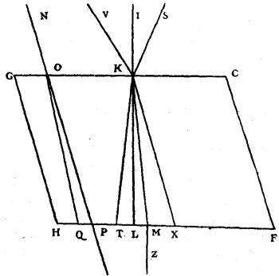
17. Finally, continuing my observations to discover the nature of this refraction, I learned that it obeyed the following remarkable rule. Let the parallelogram GCFH, made by the principal section of the Crystal, as previously determined, be traced separately. I found then that always, when the inclinations of two rays which come from opposite sides, as VK, SK here, are equal, their refractions KX and KT meet the bottom line HF in such wise that points X and T are equally distant from the point M, where the refraction of the perpendicular ray IK falls; and this occurs also for refractions in other sections of this Crystal. But before speaking of those, which have also other particular properties, we will investigate the causes of the phenomena which I have already reported.
It was after having explained the refraction of ordinary transparent bodies by means of the spherical emanations of light, as above, that I resumed my examination of the nature of this Crystal, wherein I had previously been unable to discover anything.
18. As there were two different refractions, I conceived that there were also two different emanations of waves of light, and that one could occur in the ethereal matter extending through the body of the Crystal. Which matter, being present in much larger quantity than is that of the particles which compose it, was alone capable of causing transparency, according to what has been explained heretofore. I attributed to this emanation of waves the regular refraction which is observed in this stone, by supposing these waves to be ordinarily of spherical form, and having a slower progression within the Crystal than they have outside it; whence proceeds refraction as I have demonstrated.
19. As to the other emanation which should produce the irregular refraction, I wished to try what Elliptical waves, or rather spheroidal waves, would do; and these I supposed would spread indifferently both in the ethereal matter diffused throughout the crystal and in the particles of which it is composed, according to the last mode in which I have explained transparency. It seemed to me that the disposition or regular arrangement of these particles could contribute to form spheroidal waves (nothing more being required for this than that the successive movement of light should spread a little more quickly in one direction than in the other) and I scarcely doubted that there were in this crystal such an arrangement of equal and similar particles, because of its figure and of its angles with their determinate and invariable measure. Touching which particles, and their form and disposition, I shall, at the end of this Treatise, propound my conjectures and some experiments which confirm them.
20. The double emission of waves of light, which I had imagined, became more probable to me after I had observed a certain phenomenon in the ordinary [Rock] Crystal, which occurs in hexagonal form, and which, because of this regularity, seems also to be composed of particles, of definite figure, and ranged in order. This was, that this crystal, as well as that from Iceland, has a double refraction, though less evident. For having had cut from it some well polished Prisms of different sections, I remarked in all, in viewing through them the flame of a candle or the lead of window panes, that everything appeared double, though with images not very distant from one another. Whence I understood the reason why this substance, though so transparent, is useless for Telescopes, when they have ever so little length.
21. Now this double refraction, according to my Theory hereinbefore established, seemed to demand a double emission of waves of light, both of them spherical (for both the refractions are regular) and those of one series a little slower only than the others. For thus the phenomenon is quite naturally explained, by postulating substances which serve as vehicle for these waves, as I have done in the case of Iceland Crystal. I had then less trouble after that in admitting two emissions of waves in one and the same body. And since it might have been objected that in composing these two kinds of crystal of equal particles of a certain figure, regularly piled, the interstices which these particles leave and which contain the ethereal matter would scarcely suffice to transmit the waves of light which I have localized there, I removed this difficulty by regarding these particles as being of a very rare texture, or rather as composed of other much smaller particles, between which the ethereal matter passes quite freely. This, moreover, necessarily follows from that which has been already demonstrated touching the small quantity of matter of which the bodies are built up.
22. Supposing then these spheroidal waves besides the spherical ones, I began to examine whether they could serve to explain the phenomena of the irregular refraction, and how by these same phenomena I could determine the figure and position of the spheroids: as to which I obtained at last the desired success, by proceeding as follows.
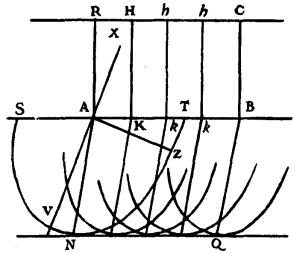
23. I considered first the effect of waves so formed, as respects the ray which falls perpendicularly on the flat surface of a transparent body in which they should spread in this manner. I took AB for the exposed region of the surface. And, since a ray perpendicular to a plane, and coming from a very distant source of light, is nothing else, according to the precedent Theory, than the incidence of a portion of the wave parallel to that plane, I supposed the straight line RC, parallel and equal to AB, to be a portion of a wave of light, in which an infinitude of points such as RHhC come to meet the surface AB at the points AKkB. Then instead of the hemispherical partial waves which in a body of ordinary refraction would spread from each of these last points, as we have above explained in treating of refraction, these must here be hemi-spheroids. The axes (or rather the major diameters) of these I supposed to be oblique to the plane AB, as is AV the semi-axis or semi-major diameter of the spheroid SVT, which represents the partial wave coming from the point A, after the wave RC has reached AB. I say axis or major diameter, because the same ellipse SVT may be considered as the section of a spheroid of which the axis is AZ perpendicular to AV. But, for the present, without yet deciding one or other, we will consider these spheroids only in those sections of them which make ellipses in the plane of this figure. Now taking a certain space of time during which the wave SVT has spread from A, it would needs be that from all the other points KkB there should proceed, in the same time, waves similar to SVT and similarly situated. And the common tangent NQ of all these semi-ellipses would be the propagation of the wave RC which fell on AB, and would be the place where this movement occurs in much greater amount than anywhere else, being made up of arcs of an infinity of ellipses, the centres of which are along the line AB.
24. Now it appeared that this common tangent NQ was parallel to AB, and of the same length, but that it was not directly opposite to it, since it was comprised between the lines AN, BQ, which are diameters of ellipses having A and B for centres, conjugate with respect to diameters which are not in the straight line AB. And in this way I comprehended, a matter which had seemed to me very difficult, how a ray perpendicular to a surface could suffer refraction on entering a transparent body; seeing that the wave RC, having come to the aperture AB, went on forward thence, spreading between the parallel lines AN, BQ, yet itself remaining always parallel to AB, so that here the light does not spread along lines perpendicular to its waves, as in ordinary refraction, but along lines cutting the waves obliquely.
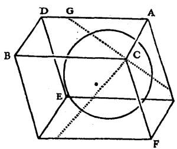
25. Inquiring subsequently what might be the position and form of these spheroids in the crystal, I considered that all the six faces produced precisely the same refractions. Taking, then, the parallelopiped AFB, of which the obtuse solid angle C is contained between the three equal plane angles, and imagining in it the three principal sections, one of which is perpendicular to the face DC and passes through the edge CF, another perpendicular to the face BF passing through the edge CA, and the third perpendicular to the face AF passing through the edge BC; I knew that the refractions of the incident rays belonging to these three planes were all similar. But there could be no position of the spheroid which would have the same relation to these three sections except that in which the axis was also the axis of the solid angle C. Consequently I saw that the axis of this angle, that is to say the straight line which traversed the crystal from the point C with equal inclination to the edges CF, CA, CB was the line which determined the position of the axis of all the spheroidal waves which one imagined to originate from some point, taken within or on the surface of the crystal, since all these spheroids ought to be alike, and have their axes parallel to one another.
26. Considering after this the plane of one of these three sections, namely that through GCF, the angle of which is 109 degrees 3 minutes, since the angle F was shown above to be 70 degrees 57 minutes; and, imagining a spheroidal wave about the centre C, I knew, because I have just explained it, that its axis must be in the same plane, the half of which axis I have marked CS in the next figure: and seeking by calculation (which will be given with others at the end of this discourse) the value of the angle CGS, I found it 45 degrees 20 minutes.
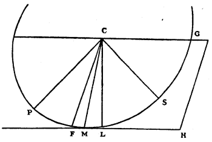
27. To know from this the form of this spheroid, that is to say the proportion of the semi-diameters CS, CP, of its elliptical section, which are perpendicular to one another, I considered that the point M where the ellipse is touched by the straight line FH, parallel to CG, ought to be so situated that CM makes with the perpendicular CL an angle of 6 degrees 40 minutes; since, this being so, this ellipse satisfies what has been said about the refraction of the ray perpendicular to the surface CG, which is inclined to the perpendicular CL by the same angle. This, then, being thus disposed, and taking CM at 100,000 parts, I found by the calculation which will be given at the end, the semi-major diameter CP to be 105,032, and the semi-axis CS to be 93,410, the ratio of which numbers is very nearly 9 to 8; so that the spheroid was of the kind which resembles a compressed sphere, being generated by the revolution of an ellipse about its smaller diameter. I found also the value of CG the semi-diameter parallel to the tangent ML to be 98,779.
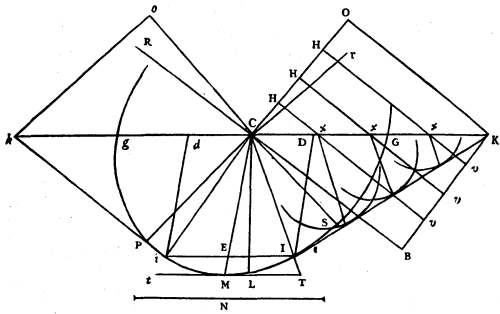
28. Now passing to the investigation of the refractions which obliquely incident rays must undergo, according to our hypothesis of spheroidal waves, I saw that these refractions depended on the ratio between the velocity of movement of the light outside the crystal in the ether, and that within the crystal. For supposing, for example, this proportion to be such that while the light in the crystal forms the spheroid GSP, as I have just said, it forms outside a sphere the semi-diameter of which is equal to the line N which will be determined hereafter, the following is the way of finding the refraction of the incident rays. Let there be such a ray RC falling upon the surface CK. Make CO perpendicular to RC, and across the angle KCO adjust OK, equal to N and perpendicular to CO; then draw KI, which touches the Ellipse GSP, and from the point of contact I join IC, which will be the required refraction of the ray RC. The demonstration of this is, it will be seen, entirely similar to that of which we made use in explaining ordinary refraction. For the refraction of the ray RC is nothing else than the progression of the portion C of the wave CO, continued in the crystal. Now the portions H of this wave, during the time that O came to K, will have arrived at the surface CK along the straight lines Hx, and will moreover have produced in the crystal around the centres x some hemi-spheroidal partial waves similar to the hemi-spheroidal GSPg, and similarly disposed, and of which the major and minor diameters will bear the same proportions to the lines xv (the continuations of the lines Hx up to KB parallel to CO) that the diameters of the spheroid GSPg bear to the line CB, or N. And it is quite easy to see that the common tangent of all these spheroids, which are here represented by Ellipses, will be the straight line IK, which consequently will be the propagation of the wave CO; and the point I will be that of the point C, conformably with that which has been demonstrated in ordinary refraction.
Now as to finding the point of contact I, it is known that one must find CD a third proportional to the lines CK, CG, and draw DI parallel to CM, previously determined, which is the conjugate diameter to CG; for then, by drawing KI it touches the Ellipse at I.
29. Now as we have found CI the refraction of the ray RC, similarly one will find Ci the refraction of the ray rC, which comes from the opposite side, by making Co perpendicular to rC and following out the rest of the construction as before. Whence one sees that if the ray rC is inclined equally with RC, the line Cd will necessarily be equal to CD, because Ck is equal to CK, and Cg to CG. And in consequence Ii will be cut at E into equal parts by the line CM, to which DI and di are parallel. And because CM is the conjugate diameter to CG, it follows that iI will be parallel to gG. Therefore if one prolongs the refracted rays CI, Ci, until they meet the tangent ML at T and t, the distances MT, Mt, will also be equal. And so, by our hypothesis, we explain perfectly the phenomenon mentioned above; to wit, that when there are two rays equally inclined, but coming from opposite sides, as here the rays RC, rc, their refractions diverge equally from the line followed by the refraction of the ray perpendicular to the surface, by considering these divergences in the direction parallel to the surface of the crystal.
30. To find the length of the line N, in proportion to CP, CS, CG, it must be determined by observations of the irregular refraction which occurs in this section of the crystal; and I find thus that the ratio of N to GC is just a little less than 8 to 5. And having regard to some other observations and phenomena of which I shall speak afterwards, I put N at 156,962 parts, of which the semi-diameter CG is found to contain 98,779, making this ratio 8 to 5-1/29. Now this proportion, which there is between the line N and CG, may be called the Proportion of the Refraction; similarly as in glass that of 3 to 2, as will be manifest when I shall have explained a short process in the preceding way to find the irregular refractions.
31. Supposing then, in the next figure, as previously, the surface of the crystal gG, the Ellipse GPg, and the line N; and CM the refraction of the perpendicular ray FC, from which it diverges by 6 degrees 40 minutes. Now let there be some other ray RC, the refraction of which must be found.
About the centre C, with semi-diameter CG, let the circumference gRG be described, cutting the ray RC at R; and let RV be the perpendicular on CG. Then as the line N is to CG let CV be to CD, and let DI be drawn parallel to CM, cutting the Ellipse gMG at I; then joining CI, this will be the required refraction of the ray RC. Which is demonstrated thus.
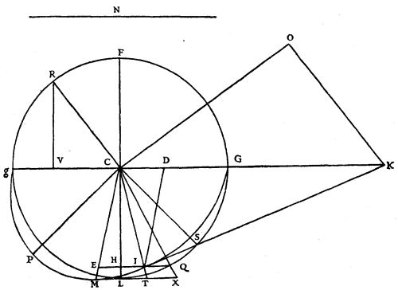
Let CO be perpendicular to CR, and across the angle OCG let OK be adjusted, equal to N and perpendicular to CO, and let there be drawn the straight line KI, which if it is demonstrated to be a tangent to the Ellipse at I, it will be evident by the things heretofore explained that CI is the refraction of the ray RC. Now since the angle RCO is a right angle, it is easy to see that the right-angled triangles RCV, KCO, are similar. As then, CK is to KO, so also is RC to CV. But KO is equal to N, and RC to CG: then as CK is to N so will CG be to CV. But as N is to CG, so, by construction, is CV to CD. Then as CK is to CG so is CG to CD. And because DI is parallel to CM, the conjugate diameter to CG, it follows that KI touches the Ellipse at I; which remained to be shown.
32. One sees then that as there is in the refraction of ordinary media a certain constant proportion between the sines of the angles which the incident ray and the refracted ray make with the perpendicular, so here there is such a proportion between CV and CD or IE; that is to say between the Sine of the angle which the incident ray makes with the perpendicular, and the horizontal intercept, in the Ellipse, between the refraction of this ray and the diameter CM. For the ratio of CV to CD is, as has been said, the same as that of N to the semi-diameter CG.
33. I will add here, before passing away, that in comparing together the regular and irregular refraction of this crystal, there is this remarkable fact, that if ABPS be the spheroid by which light spreads in the Crystal in a certain space of time (which spreading, as has been said, serves for the irregular refraction), then the inscribed sphere BVST is the extension in the same space of time of the light which serves for the regular refraction.
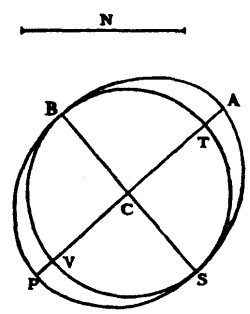
For we have stated before this, that the line N being the radius of a spherical wave of light in air, while in the crystal it spread through the spheroid ABPS, the ratio of N to CS will be 156,962 to 93,410. But it has also been stated that the proportion of the regular refraction was 5 to 3; that is to say, that N being the radius of a spherical wave of light in air, its extension in the crystal would, in the same space of time, form a sphere the radius of which would be to N as 3 to 5. Now 156,962 is to 93,410 as 5 to 3 less 1/41. So that it is sufficiently nearly, and may be exactly, the sphere BVST, which the light describes for the regular refraction in the crystal, while it describes the spheroid BPSA for the irregular refraction, and while it describes the sphere of radius N in air outside the crystal.
Although then there are, according to what we have supposed, two different propagations of light within the crystal, it appears that it is only in directions perpendicular to the axis BS of the spheroid that one of these propagations occurs more rapidly than the other; but that they have an equal velocity in the other direction, namely, in that parallel to the same axis BS, which is also the axis of the obtuse angle of the crystal.
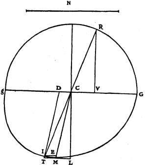
34. The proportion of the refraction being what we have just seen, I will now show that there necessarily follows thence that notable property of the ray which falling obliquely on the surface of the crystal enters it without suffering refraction. For supposing the same things as before, and that the ray makes with the same surface gG the angle RCG of 73 degrees 20 minutes, inclining to the same side as the crystal (of which ray mention has been made above); if one investigates, by the process above explained, the refraction CI, one will find that it makes exactly a straight line with RC, and that thus this ray is not deviated at all, conformably with experiment. This is proved as follows by calculation.
CG or CR being, as precedently, 98,779; CM being 100,000; and the angle RCV 73 degrees 20 minutes, CV will be 28,330. But because CI is the refraction of the ray RC, the proportion of CV to CD is 156,962 to 98,779, namely, that of N to CG; then CD is 17,828.
Now the rectangle gDC is to the square of DI as the square of CG is to the square of CM; hence DI or CE will be 98,353. But as CE is to EI, so will CM be to MT, which will then be 18,127. And being added to ML, which is 11,609 (namely the sine of the angle LCM, which is 6 degrees 40 minutes, taking CM 100,000 as radius) we get LT 27,936; and this is to LC 99,324 as CV to VR, that is to say, as 29,938, the tangent of the complement of the angle RCV, which is 73 degrees 20 minutes, is to the radius of the Tables. Whence it appears that RCIT is a straight line; which was to be proved.
35. Further it will be seen that the ray CI in emerging through the opposite surface of the crystal, ought to pass out quite straight, according to the following demonstration, which proves that the reciprocal relation of refraction obtains in this crystal the same as in other transparent bodies; that is to say, that if a ray RC in meeting the surface of the crystal CG is refracted as CI, the ray CI emerging through the opposite parallel surface of the crystal, which I suppose to be IB, will have its refraction IA parallel to the ray RC.
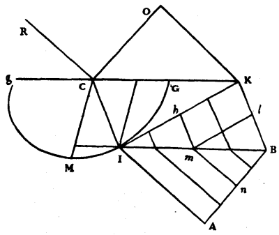
Let the same things be supposed as before; that is to say, let CO, perpendicular to CR, represent a portion of a wave the continuation of which in the crystal is IK, so that the piece C will be continued on along the straight line CI, while O comes to K. Now if one takes a second period of time equal to the first, the piece K of the wave IK will, in this second period, have advanced along the straight line KB, equal and parallel to CI, because every piece of the wave CO, on arriving at the surface CK, ought to go on in the crystal the same as the piece C; and in this same time there will be formed in the air from the point I a partial spherical wave having a semi-diameter IA equal to KO, since KO has been traversed in an equal time. Similarly, if one considers some other point of the wave IK, such as h, it will go along hm, parallel to CI, to meet the surface IB, while the point K traverses Kl equal to hm; and while this accomplishes the remainder lB, there will start from the point m a partial wave the semi-diameter of which, mn, will have the same ratio to lB as IA to KB. Whence it is evident that this wave of semi-diameter mn, and the other of semi-diameter IA will have the same tangent BA. And similarly for all the partial spherical waves which will be formed outside the crystal by the impact of all the points of the wave IK against the surface of the Ether IB. It is then precisely the tangent BA which will be the continuation of the wave IK, outside the crystal, when the piece K has reached B. And in consequence IA, which is perpendicular to BA, will be the refraction of the ray CI on emerging from the crystal. Now it is clear that IA is parallel to the incident ray RC, since IB is equal to CK, and IA equal to KO, and the angles A and O are right angles.
It is seen then that, according to our hypothesis, the reciprocal relation of refraction holds good in this crystal as well as in ordinary transparent bodies; as is thus in fact found by observation.
36. I pass now to the consideration of other sections of the crystal, and of the refractions there produced, on which, as will be seen, some other very remarkable phenomena depend.
Let ABH be a parallelepiped of crystal, and let the top surface AEHF be a perfect rhombus, the obtuse angles of which are equally divided by the straight line EF, and the acute angles by the straight line AH perpendicular to FE.
The section which we have hitherto considered is that which passes through the lines EF, EB, and which at the same time cuts the plane AEHF at right angles. Refractions in this section have this in common with the refractions in ordinary media that the plane which is drawn through the incident ray and which also intersects the surface of the crystal at right angles, is that in which the refracted ray also is found. But the refractions which appertain to every other section of this crystal have this strange property that the refracted ray always quits the plane of the incident ray perpendicular to the surface, and turns away towards the side of the slope of the crystal. For which fact we shall show the reason, in the first place, for the section through AH; and we shall show at the same time how one can determine the refraction, according to our hypothesis. Let there be, then, in the plane which passes through AH, and which is perpendicular to the plane AFHE, the incident ray RC; it is required to find its refraction in the crystal.
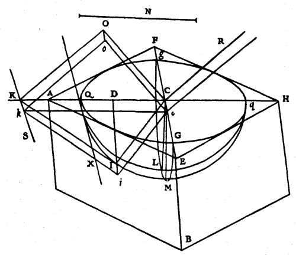
37. About the centre C, which I suppose to be in the intersection of AH and FE, let there be imagined a hemi-spheroid QGqgM, such as the light would form in spreading in the crystal, and let its section by the plane AEHF form the Ellipse QGqg, the major diameter of which Qq, which is in the line AH, will necessarily be one of the major diameters of the spheroid; because the axis of the spheroid being in the plane through FEB, to which QC is perpendicular, it follows that QC is also perpendicular to the axis of the spheroid, and consequently QCq one of its major diameters. But the minor diameter of this Ellipse, Gg, will bear to Qq the proportion which has been defined previously, Article 27, between CG and the major semi-diameter of the spheroid, CP, namely, that of 98,779 to 105,032.
Let the line N be the length of the travel of light in air during the time in which, within the crystal, it makes, from the centre C, the spheroid QCqgM. Then having drawn CO perpendicular to the ray CR and situate in the plane through CR and AH, let there be adjusted, across the angle ACO, the straight line OK equal to N and perpendicular to CO, and let it meet the straight line AH at K. Supposing consequently that CL is perpendicular to the surface of the crystal AEHF, and that CM is the refraction of the ray which falls perpendicularly on this same surface, let there be drawn a plane through the line CM and through KCH, making in the spheroid the semi-ellipse QMq, which will be given, since the angle MCL is given of value 6 degrees 40 minutes. And it is certain, according to what has been explained above, Article 27, that a plane which would touch the spheroid at the point M, where I suppose the straight line CM to meet the surface, would be parallel to the plane QGq. If then through the point K one now draws KS parallel to Gg, which will be parallel also to QX, the tangent to the Ellipse QGq at Q; and if one conceives a plane passing through KS and touching the spheroid, the point of contact will necessarily be in the Ellipse QMq, because this plane through KS, as well as the plane which touches the spheroid at the point M, are parallel to QX, the tangent of the spheroid: for this consequence will be demonstrated at the end of this Treatise. Let this point of contact be at I, then making KC, QC, DC proportionals, draw DI parallel to CM; also join CI. I say that CI will be the required refraction of the ray RC. This will be manifest if, in considering CO, which is perpendicular to the ray RC, as a portion of the wave of light, we can demonstrate that the continuation of its piece C will be found in the crystal at I, when O has arrived at K.
38. Now as in the Chapter on Reflexion, in demonstrating that the incident and reflected rays are always in the same plane perpendicular to the reflecting surface, we considered the breadth of the wave of light, so, similarly, we must here consider the breadth of the wave CO in the diameter Gg. Taking then the breadth Cc on the side toward the angle E, let the parallelogram COoc be taken as a portion of a wave, and let us complete the parallelograms CKkc, CIic, Klik, OKko. In the time then that the line Oo arrives at the surface of the crystal at Kk, all the points of the wave COoc will have arrived at the rectangle Kc along lines parallel to OK; and from the points of their incidences there will originate, beyond that, in the crystal partial hemi-spheroids, similar to the hemi-spheroid QMq, and similarly disposed. These hemi-spheroids will necessarily all touch the plane of the parallelogram KIik at the same instant that Oo has reached Kk. Which is easy to comprehend, since, of these hemi-spheroids, all those which have their centres along the line CK, touch this plane in the line KI (for this is to be shown in the same way as we have demonstrated the refraction of the oblique ray in the principal section through EF) and all those which have their centres in the line Cc will touch the same plane KI in the line Ii; all these being similar to the hemi-spheroid QMq. Since then the parallelogram Ki is that which touches all these spheroids, this same parallelogram will be precisely the continuation of the wave COoc in the crystal, when Oo has arrived at Kk, because it forms the termination of the movement and because of the quantity of movement which occurs more there than anywhere else: and thus it appears that the piece C of the wave COoc has its continuation at I; that is to say, that the ray RC is refracted as CI.
From this it is to be noted that the proportion of the refraction for this section of the crystal is that of the line N to the semi-diameter CQ; by which one will easily find the refractions of all incident rays, in the same way as we have shown previously for the case of the section through FE; and the demonstration will be the same. But it appears that the said proportion of the refraction is less here than in the section through FEB; for it was there the same as the ratio of N to CG, that is to say, as 156,962 to 98,779, very nearly as 8 to 5; and here it is the ratio of N to CQ the major semi-diameter of the spheroid, that is to say, as 156,962 to 105,032, very nearly as 3 to 2, but just a little less. Which still agrees perfectly with what one finds by observation.
39. For the rest, this diversity of proportion of refraction produces a very singular effect in this Crystal; which is that when it is placed upon a sheet of paper on which there are letters or anything else marked, if one views it from above with the two eyes situated in the plane of the section through EF, one sees the letters raised up by this irregular refraction more than when one puts one's eyes in the plane of section through AH: and the difference of these elevations appears by comparison with the other ordinary refraction of the crystal, the proportion of which is as 5 to 3, and which always raises the letters equally, and higher than the irregular refraction does. For one sees the letters and the paper on which they are written, as on two different stages at the same time; and in the first position of the eyes, namely, when they are in the plane through AH these two stages are four times more distant from one another than when the eyes are in the plane through EF.
We will show that this effect follows from the refractions; and it will enable us at the same time to ascertain the apparent place of a point of an object placed immediately under the crystal, according to the different situation of the eyes.
40. Let us see first by how much the irregular refraction of the plane through AH ought to lift the bottom of the crystal. Let the plane of this figure represent separately the section through Qq and CL, in which section there is also the ray RC, and let the semi-elliptic plane through Qq and CM be inclined to the former, as previously, by an angle of 6 degrees 40 minutes; and in this plane CI is then the refraction of the ray RC.
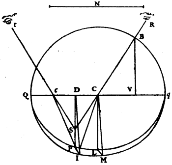
If now one considers the point I as at the bottom of the crystal, and that it is viewed by the rays ICR, Icr, refracted equally at the points Cc, which should be equally distant from D, and that these rays meet the two eyes at Rr; it is certain that the point I will appear raised to S where the straight lines RC, rc, meet; which point S is in DP, perpendicular to Qq. And if upon DP there is drawn the perpendicular IP, which will lie at the bottom of the crystal, the length SP will be the apparent elevation of the point I above the bottom.
Let there be described on Qq a semicircle cutting the ray CR at B, from which BV is drawn perpendicular to Qq; and let the proportion of the refraction for this section be, as before, that of the line N to the semi-diameter CQ.
Then as N is to CQ so is VC to CD, as appears by the method of finding the refraction which we have shown above, Article 31; but as VC is to CD, so is VB to DS. Then as N is to CQ, so is VB to DS. Let ML be perpendicular to CL. And because I suppose the eyes Rr to be distant about a foot or so from the crystal, and consequently the angle RSr very small, VB may be considered as equal to the semi-diameter CQ, and DP as equal to CL; then as N is to CQ so is CQ to DS. But N is valued at 156,962 parts, of which CM contains 100,000 and CQ 105,032. Then DS will have 70,283. But CL is 99,324, being the sine of the complement of the angle MCL which is 6 degrees 40 minutes; CM being supposed as radius. Then DP, considered as equal to CL, will be to DS as 99,324 to 70,283. And so the elevation of the point I by the refraction of this section is known.
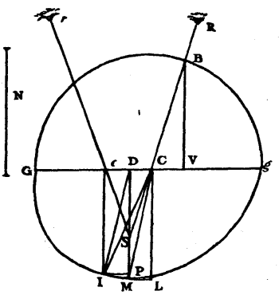
41. Now let there be represented the other section through EF in the figure before the preceding one; and let CMg be the semi-ellipse, considered in Articles 27 and 28, which is made by cutting a spheroidal wave having centre C. Let the point I, taken in this ellipse, be imagined again at the bottom of the Crystal; and let it be viewed by the refracted rays ICR, Icr, which go to the two eyes; CR and cr being equally inclined to the surface of the crystal Gg. This being so, if one draws ID parallel to CM, which I suppose to be the refraction of the perpendicular ray incident at the point C, the distances DC, Dc, will be equal, as is easy to see by that which has been demonstrated in Article 28. Now it is certain that the point I should appear at S where the straight lines RC, rc, meet when prolonged; and that this point will fall in the line DP perpendicular to Gg. If one draws IP perpendicular to this DP, it will be the distance PS which will mark the apparent elevation of the point I. Let there be described on Gg a semicircle cutting CR at B, from which let BV be drawn perpendicular to Gg; and let N to GC be the proportion of the refraction in this section, as in Article 28. Since then CI is the refraction of the radius BC, and DI is parallel to CM, VC must be to CD as N to GC, according to what has been demonstrated in Article 31. But as VC is to CD so is BV to DS. Let ML be drawn perpendicular to CL. And because I consider, again, the eyes to be distant above the crystal, BV is deemed equal to the semi-diameter CG; and hence DS will be a third proportional to the lines N and CG: also DP will be deemed equal to CL. Now CG consisting of 98,778 parts, of which CM contains 100,000, N is taken as 156,962. Then DS will be 62,163. But CL is also determined, and contains 99,324 parts, as has been said in Articles 34 and 40. Then the ratio of PD to DS will be as 99,324 to 62,163. And thus one knows the elevation of the point at the bottom I by the refraction of this section; and it appears that this elevation is greater than that by the refraction of the preceding section, since the ratio of PD to DS was there as 99,324 to 70,283.
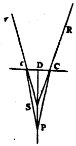
But by the regular refraction of the crystal, of which we have above said that the proportion is 5 to 3, the elevation of the point I, or P, from the bottom, will be 2/5 of the height DP; as appears by this figure, where the point P being viewed by the rays PCR, Pcr, refracted equally at the surface Cc, this point must needs appear to be at S, in the perpendicular PD where the lines RC, rc, meet when prolonged: and one knows that the line PC is to CS as 5 to 3, since they are to one another as the sine of the angle CSP or DSC is to the sine of the angle SPC. And because the ratio of PD to DS is deemed the same as that of PC to CS, the two eyes Rr being supposed very far above the crystal, the elevation PS will thus be 2/5 of PD.
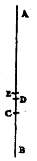
42. If one takes a straight line AB for the thickness of the crystal, its point B being at the bottom, and if one divides it at the points C, D, E, according to the proportions of the elevations found, making AE 3/5 of AB, AB to AC as 99,324 to 70,283, and AB to AD as 99,324 to 62,163, these points will divide AB as in this figure. And it will be found that this agrees perfectly with experiment; that is to say by placing the eyes above in the plane which cuts the crystal according to the shorter diameter of the rhombus, the regular refraction will lift up the letters to E; and one will see the bottom, and the letters over which it is placed, lifted up to D by the irregular refraction. But by placing the eyes above in the plane which cuts the crystal according to the longer diameter of the rhombus, the regular refraction will lift the letters to E as before; but the irregular refraction will make them, at the same time, appear lifted up only to C; and in such a way that the interval CE will be quadruple the interval ED, which one previously saw.
43. I have only to make the remark here that in both the positions of the eyes the images caused by the irregular refraction do not appear directly below those which proceed from the regular refraction, but they are separated from them by being more distant from the equilateral solid angle of the Crystal. That follows, indeed, from all that has been hitherto demonstrated about the irregular refraction; and it is particularly shown by these last demonstrations, from which one sees that the point I appears by irregular refraction at S in the perpendicular line DP, in which line also the image of the point P ought to appear by regular refraction, but not the image of the point I, which will be almost directly above the same point, and higher than S.
But as to the apparent elevation of the point I in other positions of the eyes above the crystal, besides the two positions which we have just examined, the image of that point by the irregular refraction will always appear between the two heights of D and C, passing from one to the other as one turns one's self around about the immovable crystal, while looking down from above. And all this is still found conformable to our hypothesis, as any one can assure himself after I shall have shown here the way of finding the irregular refractions which appear in all other sections of the crystal, besides the two which we have considered. Let us suppose one of the faces of the crystal, in which let there be the Ellipse HDE, the centre C of which is also the centre of the spheroid HME in which the light spreads, and of which the said Ellipse is the section. And let the incident ray be RC, the refraction of which it is required to find.
Let there be taken a plane passing through the ray RC and which is perpendicular to the plane of the ellipse HDE, cutting it along the straight line BCK; and having in the same plane through RC made CO perpendicular to CR, let OK be adjusted across the angle OCK, so as to be perpendicular to OC and equal to the line N, which I suppose to measure the travel of the light in air during the time that it spreads in the crystal through the spheroid HDEM. Then in the plane of the Ellipse HDE let KT be drawn, through the point K, perpendicular to BCK. Now if one conceives a plane drawn through the straight line KT and touching the spheroid HME at I, the straight line CI will be the refraction of the ray RC, as is easy to deduce from that which has been demonstrated in Article 36.
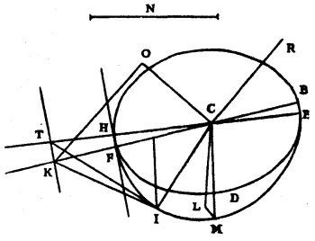
But it must be shown how one can determine the point of contact I. Let there be drawn parallel to the line KT a line HF which touches the Ellipse HDE, and let this point of contact be at H. And having drawn a straight line along CH to meet KT at T, let there be imagined a plane passing through the same CH and through CM (which I suppose to be the refraction of the perpendicular ray), which makes in the spheroid the elliptical section HME. It is certain that the plane which will pass through the straight line KT, and which will touch the spheroid, will touch it at a point in the Ellipse HME, according to the Lemma which will be demonstrated at the end of the Chapter. Now this point is necessarily the point I which is sought, since the plane drawn through TK can touch the spheroid at one point only. And this point I is easy to determine, since it is needful only to draw from the point T, which is in the plane of this Ellipse, the tangent TI, in the way shown previously. For the Ellipse HME is given, and its conjugate semi-diameters are CH and CM; because a straight line drawn through M, parallel to HE, touches the Ellipse HME, as follows from the fact that a plane taken through M, and parallel to the plane HDE, touches the spheroid at that point M, as is seen from Articles 27 and 23. For the rest, the position of this ellipse, with respect to the plane through the ray RC and through CK, is also given; from which it will be easy to find the position of CI, the refraction corresponding to the ray RC.
Now it must be noted that the same ellipse HME serves to find the refractions of any other ray which may be in the plane through RC and CK. Because every plane, parallel to the straight line HF, or TK, which will touch the spheroid, will touch it in this ellipse, according to the Lemma quoted a little before.
I have investigated thus, in minute detail, the properties of the irregular refraction of this Crystal, in order to see whether each phenomenon that is deduced from our hypothesis accords with that which is observed in fact. And this being so it affords no slight proof of the truth of our suppositions and principles. But what I am going to add here confirms them again marvellously. It is this: that there are different sections of this Crystal, the surfaces of which, thereby produced, give rise to refractions precisely such as they ought to be, and as I had foreseen them, according to the preceding Theory.
In order to explain what these sections are, let ABKF be the principal section through the axis of the crystal ACK, in which there will also be the axis SS of a spheroidal wave of light spreading in the crystal from the centre C; and the straight line which cuts SS through the middle and at right angles, namely PP, will be one of the major diameters.
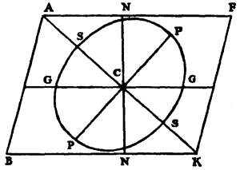
Now as in the natural section of the crystal, made by a plane parallel to two opposite faces, which plane is here represented by the line GG, the refraction of the surfaces which are produced by it will be governed by the hemi-spheroids GNG, according to what has been explained in the preceding Theory. Similarly, cutting the Crystal through NN, by a plane perpendicular to the parallelogram ABKF, the refraction of the surfaces will be governed by the hemi-spheroids NGN. And if one cuts it through PP, perpendicularly to the said parallelogram, the refraction of the surfaces ought to be governed by the hemi-spheroids PSP, and so for others. But I saw that if the plane NN was almost perpendicular to the plane GG, making the angle NCG, which is on the side A, an angle of 90 degrees 40 minutes, the hemi-spheroids NGN would become similar to the hemi-spheroids GNG, since the planes NN and GG were equally inclined by an angle of 45 degrees 20 minutes to the axis SS. In consequence it must needs be, if our theory is true, that the surfaces which the section through NN produces should effect the same refractions as the surfaces of the section through GG. And not only the surfaces of the section NN but all other sections produced by planes which might be inclined to the axis at an angle equal to 45 degrees 20 minutes. So that there are an infinitude of planes which ought to produce precisely the same refractions as the natural surfaces of the crystal, or as the section parallel to any one of those surfaces which are made by cleavage.
I saw also that by cutting it by a plane taken through PP, and perpendicular to the axis SS, the refraction of the surfaces ought to be such that the perpendicular ray should suffer thereby no deviation; and that for oblique rays there would always be an irregular refraction, differing from the regular, and by which objects placed beneath the crystal would be less elevated than by that other refraction.
That, similarly, by cutting the crystal by any plane through the axis SS, such as the plane of the figure is, the perpendicular ray ought to suffer no refraction; and that for oblique rays there were different measures for the irregular refraction according to the situation of the plane in which the incident ray was.
Now these things were found in fact so; and, after that, I could not doubt that a similar success could be met with everywhere. Whence I concluded that one might form from this crystal solids similar to those which are its natural forms, which should produce, at all their surfaces, the same regular and irregular refractions as the natural surfaces, and which nevertheless would cleave in quite other ways, and not in directions parallel to any of their faces. That out of it one would be able to fashion pyramids, having their base square, pentagonal, hexagonal, or with as many sides as one desired, all the surfaces of which should have the same refractions as the natural surfaces of the crystal, except the base, which will not refract the perpendicular ray. These surfaces will each make an angle of 45 degrees 20 minutes with the axis of the crystal, and the base will be the section perpendicular to the axis.
That, finally, one could also fashion out of it triangular prisms, or prisms with as many sides as one would, of which neither the sides nor the bases would refract the perpendicular ray, although they would yet all cause double refraction for oblique rays. The cube is included amongst these prisms, the bases of which are sections perpendicular to the axis of the crystal, and the sides are sections parallel to the same axis.
From all this it further appears that it is not at all in the disposition of the layers of which this crystal seems to be composed, and according to which it splits in three different senses, that the cause resides of its irregular refraction; and that it would be in vain to wish to seek it there.
But in order that any one who has some of this stone may be able to find, by his own experience, the truth of what I have just advanced, I will state here the process of which I have made use to cut it, and to polish it. Cutting is easy by the slicing wheels of lapidaries, or in the way in which marble is sawn: but polishing is very difficult, and by employing the ordinary means one more often depolishes the surfaces than makes them lucent.
After many trials, I have at last found that for this service no plate of metal must be used, but a piece of mirror glass made matt and depolished. Upon this, with fine sand and water, one smoothes the crystal little by little, in the same way as spectacle glasses, and polishes it simply by continuing the work, but ever reducing the material. I have not, however, been able to give it perfect clarity and transparency; but the evenness which the surfaces acquire enables one to observe in them the effects of refraction better than in those made by cleaving the stone, which always have some inequality.
Even when the surface is only moderately smoothed, if one rubs it over with a little oil or white of egg, it becomes quite transparent, so that the refraction is discerned in it quite distinctly. And this aid is specially necessary when it is wished to polish the natural surfaces to remove the inequalities; because one cannot render them lucent equally with the surfaces of other sections, which take a polish so much the better the less nearly they approximate to these natural planes.
Before finishing the treatise on this Crystal, I will add one more marvellous phenomenon which I discovered after having written all the foregoing. For though I have not been able till now to find its cause, I do not for that reason wish to desist from describing it, in order to give opportunity to others to investigate it. It seems that it will be necessary to make still further suppositions besides those which I have made; but these will not for all that cease to keep their probability after having been confirmed by so many tests.
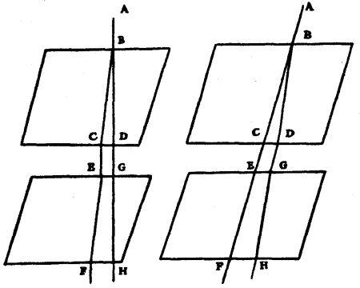
The phenomenon is, that by taking two pieces of this crystal and applying them one over the other, or rather holding them with a space between the two, if all the sides of one are parallel to those of the other, then a ray of light, such as AB, is divided into two in the first piece, namely into BD and BC, following the two refractions, regular and irregular. On penetrating thence into the other piece each ray will pass there without further dividing itself in two; but that one which underwent the regular refraction, as here DG, will undergo again only a regular refraction at GH; and the other, CE, an irregular refraction at EF. And the same thing occurs not only in this disposition, but also in all those cases in which the principal section of each of the pieces is situated in one and the same plane, without it being needful for the two neighbouring surfaces to be parallel. Now it is marvellous why the rays CE and DG, incident from the air on the lower crystal, do not divide themselves the same as the first ray AB. One would say that it must be that the ray DG in passing through the upper piece has lost something which is necessary to move the matter which serves for the irregular refraction; and that likewise CE has lost that which was necessary to move the matter which serves for regular refraction: but there is yet another thing which upsets this reasoning. It is that when one disposes the two crystals in such a way that the planes which constitute the principal sections intersect one another at right angles, whether the neighbouring surfaces are parallel or not, then the ray which has come by the regular refraction, as DG, undergoes only an irregular refraction in the lower piece; and on the contrary the ray which has come by the irregular refraction, as CE, undergoes only a regular refraction.
But in all the infinite other positions, besides those which I have just stated, the rays DG, CE, divide themselves anew each one into two, by refraction in the lower crystal so that from the single ray AB there are four, sometimes of equal brightness, sometimes some much less bright than others, according to the varying agreement in the positions of the crystals: but they do not appear to have all together more light than the single ray AB.
When one considers here how, while the rays CE, DG, remain the same, it depends on the position that one gives to the lower piece, whether it divides them both in two, or whether it does not divide them, and yet how the ray AB above is always divided, it seems that one is obliged to conclude that the waves of light, after having passed through the first crystal, acquire a certain form or disposition in virtue of which, when meeting the texture of the second crystal, in certain positions, they can move the two different kinds of matter which serve for the two species of refraction; and when meeting the second crystal in another position are able to move only one of these kinds of matter. But to tell how this occurs, I have hitherto found nothing which satisfies me.
Leaving then to others this research, I pass to what I have to say touching the cause of the extraordinary figure of this crystal, and why it cleaves easily in three different senses, parallel to any one of its surfaces.
There are many bodies, vegetable, mineral, and congealed salts, which are formed with certain regular angles and figures. Thus among flowers there are many which have their leaves disposed in ordered polygons, to the number of 3, 4, 5, or 6 sides, but not more. This well deserves to be investigated, both as to the polygonal figure, and as to why it does not exceed the number 6.
Rock Crystal grows ordinarily in hexagonal bars, and diamonds are found which occur with a square point and polished surfaces. There is a species of small flat stones, piled up directly upon one another, which are all of pentagonal figure with rounded angles, and the sides a little folded inwards. The grains of gray salt which are formed from sea water affect the figure, or at least the angle, of the cube; and in the congelations of other salts, and in that of sugar, there are found other solid angles with perfectly flat faces. Small snowflakes almost always fall in little stars with 6 points, and sometimes in hexagons with straight sides. And I have often observed, in water which is beginning to freeze, a kind of flat and thin foliage of ice, the middle ray of which throws out branches inclined at an angle of 60 degrees. All these things are worthy of being carefully investigated to ascertain how and by what artifice nature there operates. But it is not now my intention to treat fully of this matter. It seems that in general the regularity which occurs in these productions comes from the arrangement of the small invisible equal particles of which they are composed. And, coming to our Iceland Crystal, I say that if there were a pyramid such as ABCD, composed of small rounded corpuscles, not spherical but flattened spheroids, such as would be made by the rotation of the ellipse GH around its lesser diameter EF (of which the ratio to the greater diameter is very nearly that of 1 to the square root of 8)—I say that then the solid angle of the point D would be equal to the obtuse and equilateral angle of this Crystal. I say, further, that if these corpuscles were lightly stuck together, on breaking this pyramid it would break along faces parallel to those that make its point: and by this means, as it is easy to see, it would produce prisms similar to those of the same crystal as this other figure represents. The reason is that when broken in this fashion a whole layer separates easily from its neighbouring layer since each spheroid has to be detached only from the three spheroids of the next layer; of which three there is but one which touches it on its flattened surface, and the other two at the edges. And the reason why the surfaces separate sharp and polished is that if any spheroid of the neighbouring surface would come out by attaching itself to the surface which is being separated, it would be needful for it to detach itself from six other spheroids which hold it locked, and four of which press it by these flattened surfaces. Since then not only the angles of our crystal but also the manner in which it splits agree precisely with what is observed in the assemblage composed of such spheroids, there is great reason to believe that the particles are shaped and ranged in the same way.
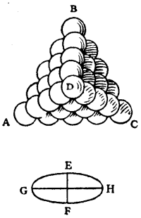
There is even probability enough that the prisms of this crystal are produced by the breaking up of pyramids, since Mr. Bartholinus relates that he occasionally found some pieces of triangularly pyramidal figure. But when a mass is composed interiorly only of these little spheroids thus piled up, whatever form it may have exteriorly, it is certain, by the same reasoning which I have just explained, that if broken it would produce similar prisms. It remains to be seen whether there are other reasons which confirm our conjecture, and whether there are none which are repugnant to it.
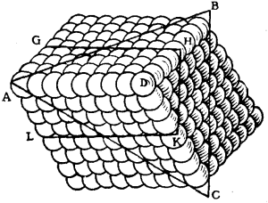
It may be objected that this crystal, being so composed, might be capable of cleavage in yet two more fashions; one of which would be along planes parallel to the base of the pyramid, that is to say to the triangle ABC; the other would be parallel to a plane the trace of which is marked by the lines GH, HK, KL. To which I say that both the one and the other, though practicable, are more difficult than those which were parallel to any one of the three planes of the pyramid; and that therefore, when striking on the crystal in order to break it, it ought always to split rather along these three planes than along the two others. When one has a number of spheroids of the form above described, and ranges them in a pyramid, one sees why the two methods of division are more difficult. For in the case of that division which would be parallel to the base, each spheroid would be obliged to detach itself from three others which it touches upon their flattened surfaces, which hold more strongly than the contacts at the edges. And besides that, this division will not occur along entire layers, because each of the spheroids of a layer is scarcely held at all by the 6 of the same layer that surround it, since they only touch it at the edges; so that it adheres readily to the neighbouring layer, and the others to it, for the same reason; and this causes uneven surfaces. Also one sees by experiment that when grinding down the crystal on a rather rough stone, directly on the equilateral solid angle, one verily finds much facility in reducing it in this direction, but much difficulty afterwards in polishing the surface which has been flattened in this manner.
As for the other method of division along the plane GHKL, it will be seen that each spheroid would have to detach itself from four of the neighbouring layer, two of which touch it on the flattened surfaces, and two at the edges. So that this division is likewise more difficult than that which is made parallel to one of the surfaces of the crystal; where, as we have said, each spheroid is detached from only three of the neighbouring layer: of which three there is one only which touches it on the flattened surface, and the other two at the edges only.
However, that which has made me know that in the crystal there are layers in this last fashion, is that in a piece weighing half a pound which I possess, one sees that it is split along its length, as is the above-mentioned prism by the plane GHKL; as appears by colours of the Iris extending throughout this whole plane although the two pieces still hold together. All this proves then that the composition of the crystal is such as we have stated. To which I again add this experiment; that if one passes a knife scraping along any one of the natural surfaces, and downwards as it were from the equilateral obtuse angle, that is to say from the apex of the pyramid, one finds it quite hard; but by scraping in the opposite sense an incision is easily made. This follows manifestly from the situation of the small spheroids; over which, in the first manner, the knife glides; but in the other manner it seizes them from beneath almost as if they were the scales of a fish.
I will not undertake to say anything touching the way in which so many corpuscles all equal and similar are generated, nor how they are set in such beautiful order; whether they are formed first and then assembled, or whether they arrange themselves thus in coming into being and as fast as they are produced, which seems to me more probable. To develop truths so recondite there would be needed a knowledge of nature much greater than that which we have. I will add only that these little spheroids could well contribute to form the spheroids of the waves of light, here above supposed, these as well as those being similarly situated, and with their axes parallel.
Calculations which have been supposed in this Chapter.
Mr. Bartholinus, in his treatise of this Crystal, puts at 101 degrees the obtuse angles of the faces, which I have stated to be 101 degrees 52 minutes. He states that he measured these angles directly on the crystal, which is difficult to do with ultimate exactitude, because the edges such as CA, CB, in this figure, are generally worn, and not quite straight. For more certainty, therefore, I preferred to measure actually the obtuse angle by which the faces CBDA, CBVF, are inclined to one another, namely the angle OCN formed by drawing CN perpendicular to FV, and CO perpendicular to DA. This angle OCN I found to be 105 degrees; and its supplement CNP, to be 75 degrees, as it should be.
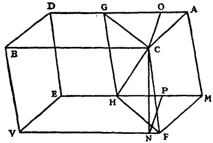
To find from this the obtuse angle BCA, I imagined a sphere having its centre at C, and on its surface a spherical triangle, formed by the intersection of three planes which enclose the solid angle C. In this equilateral triangle, which is ABF in this other figure, I see that each of the angles should be 105 degrees, namely equal to the angle OCN; and that each of the sides should be of as many degrees as the angle ACB, or ACF, or BCF. Having then drawn the arc FQ perpendicular to the side AB, which it divides equally at Q, the triangle FQA has a right angle at Q, the angle A 105 degrees, and F half as much, namely 52 degrees 30 minutes; whence the hypotenuse AF is found to be 101 degrees 52 minutes. And this arc AF is the measure of the angle ACF in the figure of the crystal.
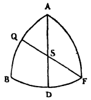
In the same figure, if the plane CGHF cuts the crystal so that it divides the obtuse angles ACB, MHV, in the middle, it is stated, in Article 10, that the angle CFH is 70 degrees 57 minutes. This again is easily shown in the same spherical triangle ABF, in which it appears that the arc FQ is as many degrees as the angle GCF in the crystal, the supplement of which is the angle CFH. Now the arc FQ is found to be 109 degrees 3 minutes. Then its supplement, 70 degrees 57 minutes, is the angle CFH.
It was stated, in Article 26, that the straight line CS, which in the preceding figure is CH, being the axis of the crystal, that is to say being equally inclined to the three sides CA, CB, CF, the angle GCH is 45 degrees 20 minutes. This is also easily calculated by the same spherical triangle. For by drawing the other arc AD which cuts BF equally, and intersects FQ at S, this point will be the centre of the triangle. And it is easy to see that the arc SQ is the measure of the angle GCH in the figure which represents the crystal. Now in the triangle QAS, which is right-angled, one knows also the angle A, which is 52 degrees 30 minutes, and the side AQ 50 degrees 56 minutes; whence the side SQ is found to be 45 degrees 20 minutes.
In Article 27 it was required to show that PMS being an ellipse the centre of which is C, and which touches the straight line MD at M so that the angle MCL which CM makes with CL, perpendicular on DM, is 6 degrees 40 minutes, and its semi-minor axis CS making with CG (which is parallel to MD) an angle GCS of 45 degrees 20 minutes, it was required to show, I say, that, CM being 100,000 parts, PC the semi-major diameter of this ellipse is 105,032 parts, and CS, the semi-minor diameter, 93,410.
Let CP and CS be prolonged and meet the tangent DM at D and Z; and from the point of contact M let MN and MO be drawn as perpendiculars to CP and CS. Now because the angles SCP, GCL, are right angles, the angle PCL will be equal to GCS which was 45 degrees 20 minutes. And deducting the angle LCM, which is 6 degrees 40 minutes, from LCP, which is 45 degrees 20 minutes, there remains MCP, 38 degrees 40 minutes. Considering then CM as a radius of 100,000 parts, MN, the sine of 38 degrees 40 minutes, will be 62,479. And in the right-angled triangle MND, MN will be to ND as the radius of the Tables is to the tangent of 45 degrees 20 minutes (because the angle NMD is equal to DCL, or GCS); that is to say as 100,000 to 101,170: whence results ND 63,210. But NC is 78,079 of the same parts, CM being 100,000, because NC is the sine of the complement of the angle MCP, which was 38 degrees 40 minutes. Then the whole line DC is 141,289; and CP, which is a mean proportional between DC and CN, since MD touches the Ellipse, will be 105,032.
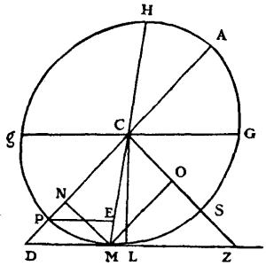
Similarly, because the angle OMZ is equal to CDZ, or LCZ, which is 44 degrees 40 minutes, being the complement of GCS, it follows that, as the radius of the Tables is to the tangent of 44 degrees 40 minutes, so will OM 78,079 be to OZ 77,176. But OC is 62,479 of these same parts of which CM is 100,000, because it is equal to MN, the sine of the angle MCP, which is 38 degrees 40 minutes. Then the whole line CZ is 139,655; and CS, which is a mean proportional between CZ and CO will be 93,410.
At the same place it was stated that GC was found to be 98,779 parts. To prove this, let PE be drawn in the same figure parallel to DM, and meeting CM at E. In the right-angled triangle CLD the side CL is 99,324 (CM being 100,000), because CL is the sine of the complement of the angle LCM, which is 6 degrees 40 minutes. And since the angle LCD is 45 degrees 20 minutes, being equal to GCS, the side LD is found to be 100,486: whence deducting ML 11,609 there will remain MD 88,877. Now as CD (which was 141,289) is to DM 88,877, so will CP 105,032 be to PE 66,070. But as the rectangle MEH (or rather the difference of the squares on CM and CE) is to the square on MC, so is the square on PE to the square on Cg; then also as the difference of the squares on DC and CP to the square on CD, so also is the square on PE to the square on gC. But DP, CP, and PE are known; hence also one knows GC, which is 98,779.
Lemma which has been supposed.
If a spheroid is touched by a straight line, and also by two or more planes which are parallel to this line, though not parallel to one another, all the points of contact of the line, as well as of the planes, will be in one and the same ellipse made by a plane which passes through the centre of the spheroid.
Let LED be the spheroid touched by the line BM at the point B, and also by the planes parallel to this line at the points O and A. It is required to demonstrate that the points B, O, and A are in one and the same Ellipse made in the spheroid by a plane which passes through its centre.
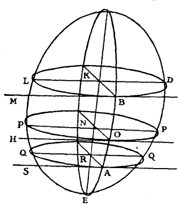
Through the line BM, and through the points O and A, let there be drawn planes parallel to one another, which, in cutting the spheroid make the ellipses LBD, POP, QAQ; which will all be similar and similarly disposed, and will have their centres K, N, R, in one and the same diameter of the spheroid, which will also be the diameter of the ellipse made by the section of the plane that passes through the centre of the spheroid, and which cuts the planes of the three said Ellipses at right angles: for all this is manifest by proposition 15 of the book of Conoids and Spheroids of Archimedes. Further, the two latter planes, which are drawn through the points O and A, will also, by cutting the planes which touch the spheroid in these same points, generate straight lines, as OH and AS, which will, as is easy to see, be parallel to BM; and all three, BM, OH, AS, will touch the Ellipses LBD, POP, QAQ in these points, B, O, A; since they are in the planes of these ellipses, and at the same time in the planes which touch the spheroid. If now from these points B, O, A, there are drawn the straight lines BK, ON, AR, through the centres of the same ellipses, and if through these centres there are drawn also the diameters LD, PP, QQ, parallel to the tangents BM, OH, AS; these will be conjugate to the aforesaid BK, ON, AR. And because the three ellipses are similar and similarly disposed, and have their diameters LD, PP, QQ parallel, it is certain that their conjugate diameters BK, ON, AR, will also be parallel. And the centres K, N, R being, as has been stated, in one and the same diameter of the spheroid, these parallels BK, ON, AR will necessarily be in one and the same plane, which passes through this diameter of the spheroid, and, in consequence, the points R, O, A are in one and the same ellipse made by the intersection of this plane. Which was to be proved. And it is manifest that the demonstration would be the same if, besides the points O, A, there had been others in which the spheroid had been touched by planes parallel to the straight line BM.